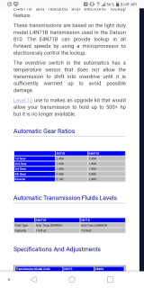

-
Hello all, I have a quick question. So I have a Z im replacing the tranny on. My question is how to find the difference from both auto transmissions that came available in auto according to xenon. I purchased a used one, but they didnt give me the fly wheel for it, and the torque converter for the one on my vehicle is a different size and appears to have been replaces at some point then the one i purchased which seems to be an original torque converter. The shaft where the torque converter slides onto are different sizes by mere centimeters. The torque converters are different sizes. One is fatter then the other. The transmissions are exactly the same other then that. So now im stuck trying to find which flexplate i need for the torque converter to fit.
I had installed the uses tranny with the torque converter it had, and it wouldnt ebeter all the way as the converter was pressing against the flexplate really tightly.
Anyone else run into this issue?
I will have comparison photos later today when i get to them on my laptop. -
I had the same issue. Read my posts below. We need to know what trans you are replacing with what; I mean are you going from NA to turbo or vice versa? As you probably already discovered, the hole patterns are different between the turbo and NA flex plates and torque converters. The flex plates are also different thicknesses. You can make a turbo flex plate fit an NA TC and vice versa by drilling out the holes in the flex plate. Take some measurements using the attached figure before you force anything. And if it is still forced together, my advice is, don't start the engine. -
One more question; when you say the shafts the TC slides on are different, do you mean by length or diameter? I didn't measure any differences in either between the NA and turbo transmissions, but I don't have a micrometer.
Oh, and another thing; according to the FSM the TCs should have stamps on them; GXA for the NA, and G for the turbo; that might tell you what you have. They don't always though; I have four of them, and none of them have the stamps on the casting.Last edited by bacon; 01-25-2019, 02:47 PM.

Copyright © 2006–. All rights reserved. Privacy Policy